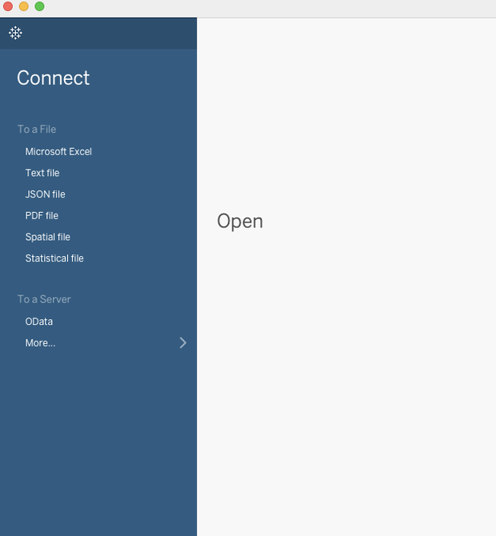
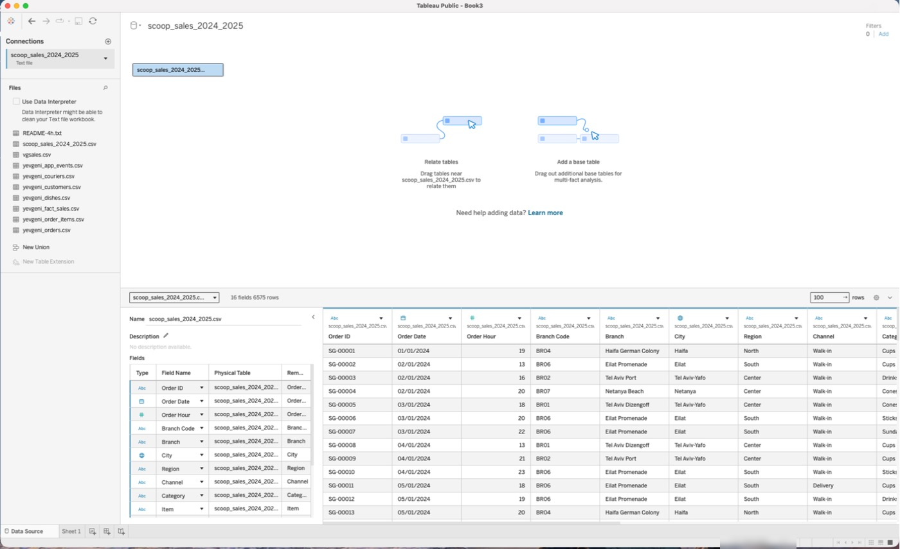
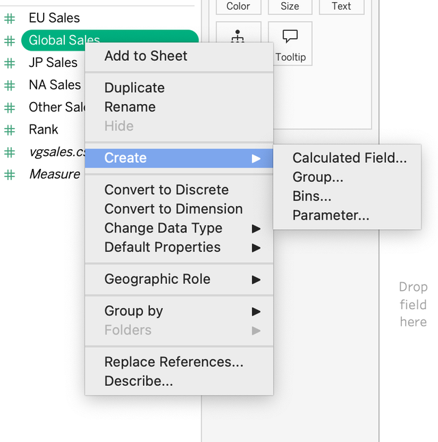
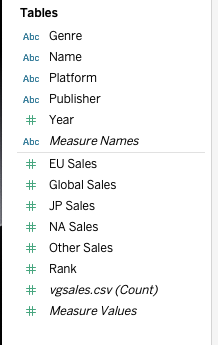

?teacher=1 בכתובת הדף: מה לומר, איפה לעצור ומה לבדוק לפני שממשיכים.מתחילים מה נבנה במודול הזה: חיבור נקי של Scoop & Go ל-Tableau Public, ובדיקת בריאות מלאה של הנתונים: 16 שדות, 6,575 שורות וכמה סכומי ביקורת שמחשבים פעם אחת ומשווים למה שהמסך אומר. בדרך מתקנים סוגי שדות, שמות והסתרות, פוגשים קובץ בעברית שמתנהג מוזר, ולומדים מה Tableau Public יודע לקרוא ומה לא.
מה צריך להיות מוכן: Tableau Desktop Public Edition פתוח (אפשר גם web authoring בדפדפן, ובמקומות שבהם הוא שונה נאמר את זה), והקבצים של המודול: scoop_sales_2024_2025.csv scoop_sales_2024_2025.xlsx sausage_hebrew_500.xlsx. עדיף לשמור אותם בתיקייה קצרה, בלי רווחים ובלי עברית בנתיב. המודול הקודם: מכירים את Tableau Public.
לאן Tableau Public יודע להתחבר, ולמה רק Extract
המנהלת של Scoop & Go שולחת לכם קובץ עם 6,575 שורות מכירה משנתיים. לפני שבונים גרף שואלים שאלה אחת: Tableau Public בכלל יודע לקרוא את הקובץ הזה?
Data Source): הקובץ או השירות ש-Tableau קורא ממנו את הנתונים. דוגמה: הקובץ scoop_sales_2024_2025.csv. פותחים אותו באקסל ורואים שכל שורה היא שורת הזמנה אחת.Connector): החלק ב-Tableau שיודע לקרוא סוג מסוים של מקור. דוגמה: המחבר Text file קורא קבצי CSV, והמחבר Microsoft Excel קורא קבצי xlsx.בואו נראה איך זה נראה במסך. זו חלונית Connect של Tableau Public, בצילום אמיתי. בכותרת החלון אצלכם צריך להיות כתוב Tableau Public.

To a File שישה סוגי קבצים: Excel, Text, JSON, PDF, Spatial, Statistical. תחת To a Server יש OData ו-More.... בקבצי התוכנה Google Drive מסומן כמחבר שזמין ב-Public, ואילו Box, Dropbox ו-OneDrive and SharePoint Online מסומנים כלא זמינים.הרשימה המלאה, עם מלכודת אחת לכל שורה
| מקור | סוגי קבצים | מתאים ל... | המלכודת |
|---|---|---|---|
| Excel | .xlsx (Excel 2007 ומעלה) | טבלאות עם כמה גיליונות | Tableau לא תומך בטבלת PivotTable של אקסל. מעתיקים ערכים לגיליון רגיל. |
| Text | .csv .txt .tsv .tab | ייצוא ממערכות, הקובץ הפשוט ביותר | מפריד שדות, קידוד ו-Locale (סעיף 5). |
| JSON | .json | נתונים מ-API ומאתרים | Tableau סורק את 10,000 השורות הראשונות כדי להבין את המבנה. |
| טבלאות שתקועות בדוח | אין תמיכה בעברית (ימין לשמאל): אותיות עלולות להתהפך. | ||
| Spatial | Shapefile, KML, GeoJSON, MapInfo | גבולות ואזורים למפות | Shapefile הוא כמה קבצים ביחד. מכווצים ל-zip. |
| Statistical | SAS, SPSS, R | קבצים מסטטיסטיקאים ומחקר | רלוונטי בעיקר למי שמקבל נתונים ממחקר. |
| Google Drive | גיליון Google Sheets ועוד | קובץ משותף שמתעדכן | צריך חשבון Google. ריענון אוטומטי כל 24 שעות רק כאן. |
| OData | כתובת של פיד נתונים | מערכות עסקיות שמפרסמות פיד | למתקדמים. מדלגים בקורס הזה. |
המקור: דף הפיצ׳רים וה-FAQ של Tableau Public, כפי שנבדקו באוקטובר 2026. רשימות כאלה משתנות, ולכן בדקו בתיעוד לפני ששומרים אותה כמסמך קבוע.
למה רק Extract
ב-Tableau Public אין חיבור חי. התוכנה לוקחת את הנתונים מהקובץ ובונה מהם Extract, וכל הגרפים נבנים ממנו.
את התמונה המלאה, כולל מה קורה בפרסום, נראה בסעיף 8. כרגע מספיק לזכור: מה שעל המסך הוא צילום ולא הקובץ החי.
לא זמין ב-Tableau Public: ככה עובדים סביב זה. אין מחבר למסד נתונים (SQL Server, MySQL, PostgreSQL, Oracle, Snowflake, BigQuery ועוד), אין חיבור חי, ואין ריענון מתוזמן (חוץ מ-Google Drive). הדרך עוקפת: מריצים את השאילתה בכלי של מסד הנתונים, מייצאים את התוצאה ל-CSV וטוענים את ה-CSV. אותו דבר שעשיתם ב-SQL במפגש המסכם, רק שהשלב האחרון הוא קובץ. נחזור לזה בסוף הקורס, במודול 15, ובמפגש המסכם בחלק 2 (SQL).
תרגיל: מה בדיוק יש בחלונית Connect
- פתחו את Tableau Public. אם נפתח גיליון ולא מסך הפתיחה, בחרו
FileואזShow Start Page. למה: משם מתחברים. - תחת
To a Fileספרו את הפריטים ורשמו את השמות. למה: זו כל הרשימה של סוגי קבצים, ואין בה יותר. - תחת
To a Serverרשמו מה מופיע. למה: כאן מחפשים מסדי נתונים, ומגלים שאין. - לחצו על
More...וקראו את הרשימה שנפתחת. חפשו בהGoogle Drive, ובדקו אם ישBox,DropboxאוOneDrive. אל תבחרו כלום ואל תתחברו. למה: להכיר את המקום שבו נמצא המחבר היחיד שמתרענן לבד. - הסתכלו על כותרת החלון. למה: אם כתוב Tableau Public, אתם בגרסה הנכונה.
תוצאה צפויה: תחת To a File שישה פריטים: Microsoft Excel, Text file, JSON file, PDF file, Spatial file, Statistical file. תחת To a Server שניים: OData ו-More.... ב-More... יש Google Drive. Box, Dropbox ו-OneDrive and SharePoint Online מסומנים בקבצי התוכנה כלא זמינים ב-Public, ולכן לא אמורים להופיע. אם אתם רואים רשימה ארוכה של שרתי מסדי נתונים, כנראה זו לא Public Edition (המלכודת הבאה).
הורדתי את הגרסה הלא נכונה. יש היום שתי הורדות חינמיות: Tableau Desktop Public Edition (שומרת גם ל-Tableau Public) ו-Tableau Desktop Free Edition, שיודעת להתחבר ליותר מקורות אבל לא שומרת ל-Tableau Public. הסימנים: רשימת חיבורים ארוכה במיוחד, וכפתור שמירה לאתר שחסר. הפתרון: חזרו להורדה מ-public.tableau.com (ראו מודול 1).
כשהנתונים הם צילום, יש להם תאריך. הקפידו לכתוב בגרף או בכותרת עד מתי הנתונים מגיעים (בדוגמה שלנו: 31.12.2025). מי שיפתח את הדוח בעוד שנה צריך לדעת שהוא לא רואה את מה שקרה מאז.
CSV הוא השפה המשותפת של העולם. כמעט כל מערכת, ממסד נתונים ועד מערכת קופות, יודעת לייצא אליו. לכן אנליסטים רבים עובדים כך: שואבים מהמערכת, מייצאים קובץ, וטוענים אותו לכלי הדוחות. זה בדיוק התהליך שיעבוד לכם ב-Tableau Public.
המנהלת מבקשת דשבורד שמתעדכן כל בוקר ישירות ממסד הנתונים של הרשת. מה מזה אפשר לעשות ב-Tableau Public, ומה לא? מה תציעו לה?
איזה חיבור אפשר לבנות ב-Tableau Public?
פרסמתם דוח ואחר כך הוספתם 50 שורות לקובץ ה-Excel. מה רואים מי שפותח את הדוח באתר?
More..., והאם Public Edition פותח קובץ .xls ישן (מסך הפתיחה מזכיר xls, אבל לא בדקנו קובץ. לא נדרש לתרגילים כאן, כולם xlsx). הרשימה בטבלה היא מהתיעוד הרשמי: Google Sheets כמחבר נפרד הופסק, ו-Web Data Connector הוצא משימוש, ולכן אין להם שורה.מתחברים צעד אחר צעד: טוענים את Scoop & Go
קודם התמונה הקצרה של הדרך שהנתונים עוברים, ואחר כך לוחצים. כל מה שבמודול הזה קורה בחלק השני והשלישי של הדרך.
- מתחילים בקובץ במחשב: scoop_sales_2024_2025.csv, בתיקייה קצרה.
- Connect: בוחרים מחבר (Text file) ופותחים את הקובץ.
- דף Data Source: כאן בודקים שורות, סוגים ושמות, לפני שבונים גרף.
- Extract: Tableau שומר צילום של הנתונים, ומכאן עובדים רק איתו.
- גיליונות: כל גרף נבנה מהנתונים שנטענו, בלי לגעת בקובץ המקורי.
- שמרו את scoop_sales_2024_2025.csv בתיקייה קצרה, למשל C:\Vizu או ~/Vizu, בלי רווחים ובלי עברית בנתיב. למה: נתיב ארוך או עם עברית הוא מקור לתקלות שאין טעם להסתכן בהן.
- ב-Tableau Public, בחלונית
Connect, תחתTo a File, לחצוText file. למה: CSV הוא קובץ טקסט שהעמודות בו מופרדות בפסיקים. - בחרו את הקובץ ולחצו
Open. התוכנה עוברת לדףData Source. למה: זה המקום שבו בודקים את הנתונים לפני שבונים. - מעל הגריד, חפשו את השורה שאומרת כמה שדות וכמה שורות יש. למה: זו בדיקת השפיות הראשונה, ויש לה תשובה ידועה.
- הסתכלו על מה שמעל כל עמודה: סמל הסוג (
Abc,#, תאריך) ושם השדה. רשמו אילו עמודות קיבלו#. למה: נשתמש בזה בסעיף 4. - השוו את השם Order ID על המסך לשם Order_ID שבקובץ. למה: Tableau מחליף קו תחתון ברווח בשמות באנגלית, והשם המקורי נשאר מחוץ לעין, בעמודה Remote Field Name.
תוצאה צפויה: בשורת הסטטוס: 16 fields 6575 rows (בלי פסיק; כך Tableau כותב). שורה ראשונה: SG-00001, 2024-01-01, 19, BR04, Haifa German Colony. הקובץ עצמו מכיל 6,576 שורות כשסופרים את שורת הכותרת.
כך אמורות להיראות הנתונים בגריד (חמש שורות ראשונות, כל 16 העמודות). אם אצלכם משהו שונה, כנראה שטענתם קובץ אחר:
| Order ID | Order Date | Order Hour | Branch Code | Branch | City | Region | Channel | Category | Item | Quantity | Unit Price | Discount | Sales | Cost | Profit |
|---|---|---|---|---|---|---|---|---|---|---|---|---|---|---|---|
| SG-00001 | 2024-01-01 | 19 | BR04 | Haifa German Colony | Haifa | North | Walk-in | Cups | Lemon Sorbet Cup | 2 | 20 | 0 | 40 | 17 | 23 |
| SG-00002 | 2024-01-02 | 13 | BR06 | Eilat Promenade | Eilat | South | Walk-in | Cups | Pistachio Cup | 1 | 24 | 0 | 24 | 12 | 12 |
| SG-00003 | 2024-01-02 | 16 | BR02 | Tel Aviv Port | Tel Aviv-Yafo | Center | Walk-in | Drinks | Milkshake | 1 | 26 | 0 | 26 | 10 | 16 |
| SG-00004 | 2024-01-02 | 20 | BR07 | Netanya Beach | Netanya | Center | Walk-in | Cones | Classic Cone | 1 | 16 | 0 | 16 | 7 | 9 |
| SG-00005 | 2024-01-03 | 18 | BR01 | Tel Aviv Dizengoff | Tel Aviv-Yafo | Center | Walk-in | Cones | Double Cone | 1 | 26 | 0 | 26 | 12 | 14 |
הגריד מציג את השמות המתוקנים (עם רווח) ולא את הקו התחתון. התאריך מוצג לפי הגדרות האזור במחשב: בצילום מ-Mac שבסעיף 3 הוא מופיע כ-01/01/2024.
אותו דבר מקובץ Excel
אותם נתונים קיימים גם כקובץ xlsx עם שני גיליונות: Sales (6,575 שורות) ו-Branches (תשעה סניפים, עם מנהל, תאריך פתיחה ושטח). בואו נראה מה שונה כשטוענים אותו.
- הורידו את scoop_sales_2024_2025.xlsx. חזרו לדף ההתחלה (
File > Show Start Page, אוData > New Data Sourceאם אתם בתוך גיליון) ובחרוMicrosoft Excel. למה: זה מחבר אחר, עם התנהגות אחרת לגיליונות. - בצד שמאל של דף ה-Data Source רשומים שני הגיליונות. גררו את
Salesאל הקנבס (או לחצו עליו פעמיים). למה: ב-Excel בוחרים בעצמכם אילו גיליונות נכנסים. - אל תגררו את
Branchesעכשיו. רק לחצו עליו בלי לגרור וראו שהוא קיים. למה: הוספת טבלה שנייה מחברת אותה לראשונה, ואת זה לומדים במודול 11. - קראו את שורת הסטטוס, ואת סמל הסוג של
Order Date. למה: בקובץ xlsx התאריך הוא באמת תאריך, ואילו ב-CSV הוא טקסט ש-Tableau מפרש.
תוצאה צפויה: 16 fields 6575 rows, בדיוק כמו ב-CSV. ב-Branches יש 9 שורות ו-7 שדות. במודולים הבאים נעבוד עם ה-CSV, אבל כל מה שנעשה עובד גם עם ה-xlsx.
הכול נכנס לעמודה אחת. אם אחרי הטעינה כל השורה מופיעה בתוך שדה בודד, Tableau קרא את הקובץ עם מפריד שגוי (פסיק, נקודה-פסיק או טאב). הפתרון: על הקנבס לחצו על החץ של הטבלה, בחרו Text File Properties... ושנו את Field separator. שם אפשר לשנות גם את Character set ואת Locale.
מספר השורות לא מסתדר. אם הוצג 6,574 או 6,576, הכותרת התפרשה אחרת: שורת נתונים נבלעה בתור כותרת, או שורת כותרת נספרה כנתונים. בקובץ בלי כותרות, Tableau לא יכול לנחש, ואפשר להגיד לו לייצר שמות בעצמו. הכלל: קודם בודקים את המספר, ורק אחר כך בונים.
כל שורה בקובץ היא שורת הזמנה אחת, ובשדה Order ID יש 6,575 ערכים שונים, כלומר אין הזמנה שחוזרת. זה אומר ש-6,575 הוא גם מספר השורות וגם מספר ההזמנות. בקבצים אחרים זה לא תמיד כך (הזמנה אחת יכולה לפרוש על כמה שורות), ולכן שואלים מה בדיוק שורה מייצגת.
כשמעבירים נתונים ממערכת אחת לאחרת, אנשי נתונים עושים "בדיקת התאמה": סופרים שורות וסוכמים עמודה כספית במקור וביעד, ומשווים. אם המספרים לא זהים, לא ממשיכים. זה בדיוק מה שאתם עושים כאן במספר השורות, ובסעיף 10 תעשו את זה בצורה מלאה.
למה בודקים את מספר השורות לפני כל דבר אחר, ולא אחרי שבונים את הגרף הראשון?
בעורך טקסט, הקובץ scoop_sales_2024_2025.csv מראה 6,576 שורות, וב-Tableau כתוב 6575 rows. האם יש בעיה?
דף Data Source: מה יש על המסך ומה עושים בו
אחרי שטענתם את Scoop & Go, נפתח מסך שרוב המתחילים רק עוברים דרכו. כדאי לעצור בו. כאן רואים את הנתונים לפני שבונים עליהם, ומכאן מתקנים אותם.
Data Source page): המסך שנפתח אחרי החיבור. מציג את המקור, את הטבלאות ואת השורות עצמן, ומאפשר לתקן שמות וסוגים. דוגמה: שורת הסטטוס שאומרת 16 fields 6575 rows.הנה הצילום האמיתי, אחרי שחיברנו את scoop_sales_2024_2025.csv:

Connections עם המקור והמחבר (Text file). מתחת: Files, תיבת הסימון Use Data Interpreter עם ההערה שהכלי עשוי לנקות את הקובץ, ורשימת כל הקבצים שבאותה תיקייה. בתחתית הרשימה New Union (זמין) ו-New Table Extension (אפור). בקנבס: הטבלה במלבן, ושתי הדרכות: Relate tables ו-Add a base table. באמצע: 16 fields 6575 rows, ומימין התיבה 100 ואז rows. למטה משמאל: רשימת השדות עם Type, Field Name, Physical Table ו-Remote Field Name. מימין: הגריד. מעל City יש גלובוס, מעל Order Date לוח שנה, ומעל Order Hour הסימן #. בפינה הימנית העליונה Filters עם 0 ו-Add.ועכשיו אותו מסך עם Scoop & Go, בהדמיה. לחצו על כל אחד מהמספרים הכתומים ותראו מה אפשר לעשות באזור הזה.
Files
| AbcOrder ID | 📅Order Date | #Order Hour | AbcBranch | AbcCity | #Sales |
|---|---|---|---|---|---|
| SG-00001 | 2024-01-01 | 19 | Haifa German Colony | Haifa | 40 |
| SG-00002 | 2024-01-02 | 13 | Eilat Promenade | Eilat | 24 |
| SG-00003 | 2024-01-02 | 16 | Tel Aviv Port | Tel Aviv-Yafo | 26 |
מה רואים ומה עושים: בקיצור
| איפה | מה רואים | מה בודקים |
|---|---|---|
| שורת הסטטוס | 16 fields 6575 rows | מספר השורות מול המקור |
| סמל מעל עמודה | Abc טקסט, # מספר, סמל תאריך | האם הסוג הגיוני |
| שם השדה | Order ID במקום Order_ID | האם השם ברור למי שיקרא את הדוח |
| הגריד | שורות ראשונות | ערכים חריגים, ריקים, כותרות כפולות |
- חזרו לדף ה-Data Source של scoop_sales_2024_2025.csv. למה: זה המסך שנלמד.
- פתחו את התיבה של מספר השורות שמוצגות בגריד (ליד הכיתוב
rows) וראו מה האפשרויות. למה: הגריד הוא מדגם. כך מבינים כמה ממנו רואים. - לחצו על החץ הקטן בכותרת של העמודה
Salesוראו את התפריט. אל תשנו כלום. למה: זה מקום שבו משנים שם ומסתירים שדה. - לחצו על סמל הסוג מעל
Order Dateוראו את רשימת הסוגים. סגרו עם Esc. למה: כאן מתקנים סוג שגוי. - לחצו על
Sheet 1בתחתית. משמאל מופיעה רשימת השדות. חזרו עםData Source. למה: להיווכח שהשינויים בדף הזה משפיעים על הגיליון.
תוצאה צפויה: אתם יודעים להצביע על שבעת האזורים בלי לחשוב. ברשימת השדות של הגיליון, תחת הכותרת Tables, יש 9 ממדים מעל הקו הדק (Branch, Branch Code, Category, Channel, City, Item, Order Date, Order ID, Region) ו-7 מדדים מתחתיו (Cost, Discount, Order Hour, Profit, Quantity, Sales, Unit Price). בנוסף יש שדות ש-Tableau יוצרת לבד, בנטוי: Measure Names מעל הקו, ומתחתיו Latitude (generated) ו-Longitude (generated) (כי City קיבל תפקיד של עיר), שדה הספירה scoop_sales_2024_2025.csv (Count) ו-Measure Values. שימו לב ש-Order Hour נמצא בין המדדים. בסעיף 4 נבין למה זה בעיה.
ב-web authoring (בדפדפן): מעלים קובץ xlsx, csv או tsv (עד 1 GB לקובץ), ולכן את התרגילים עם קבצי Scoop & Go ו-sausage אפשר לעשות גם שם. בדף הנתונים בדפדפן ייתכן שחלק מהכלים שבמודול חסרים או נמצאים במקום אחר, למשל שינוי סוג שדה, הסתרה ותפקיד גיאוגרפי: בדקו אם זמין אצלכם. JSON, PDF ו-Shapefile טוענים ב-Desktop.
הגריד מציג רק מדגם. בצילום למעלה הוא מציג 100 שורות מתוך 6,575. אם השורות הראשונות נראות תקינות, זה עדיין לא אומר שהקובץ תקין: בקובץ אחר, vgsales של משחקי הווידאו, הערך N/A בעמודת השנה מופיע לראשונה רק בשורה 180, ובסך הכול ב-271 שורות. לכן לא מסתפקים במבט בגריד, ובסעיף 10 בודקים גם בסכומים.
הגריד מראה מה בעצם יש בקובץ: שורה היא רשומה אחת, ועמודה היא דבר אחד שמודדים עליה. אם הגריד נראה כמו דוח (כותרות באמצע, שורות סיכום), Tableau לא יידע לעבוד איתו, ובסעיף 9 נראה למה.
מי שמקבל קובץ מאדם אחר, בכל תחום, עושה אותו הדבר: מסתכל על השורות הראשונות, על האחרונות ועל כמה באמצע. בדרך כלל זה מהיר, וחוסך שעות של דיבוג בגרף שנראה שגוי.
בטבלת השדות יש עמודה בשם Remote Field Name, לצד Field Name. למה Tableau שומר את שני השמות, ומה קורה כשמשנים שם של שדה?
בדף ה-Data Source כתוב 16 fields 6575 rows והגריד מציג 100 שורות. מה זה אומר?
סוגי נתונים: מה Tableau מנחש, ואיפה הוא טועה
בעמודה Order Hour כתוב 19, ובעמודה Quantity כתוב 2. שניהם מספרים. אבל 19 הוא שעה, ו-2 הוא כמות, ו-Tableau לא יודע את זה. הוא מנחש לפי מה שכתוב בתא.
Data Type): מה Tableau חושב שיש בתוך עמודה: טקסט, מספר, תאריך ועוד. הסוג קובע מה אפשר לעשות עם השדה. דוגמה: 2024-01-01 הוא תאריך, ולכן אפשר לחשב ממנו חודש. SG-00001 הוא טקסט, ולכן אי אפשר.| סמל | סוג | דוגמה מ-Scoop & Go |
|---|---|---|
| Abc | טקסט (String) | SG-00001, Haifa |
| # | מספר שלם (Number (whole)) | Quantity: 2. Order Hour: 19 |
| # | מספר עם נקודה עשרונית (Number (decimal)) | Discount: 0.1. Sales: 40.0 |
| 📅 | תאריך (Date) | Order Date: 2024-01-01 |
| 🕑 | תאריך ושעה (Date & Time) | לא קיים ב-Scoop. למשל 2026-03-02 19:20 בטבלת ההזמנות של יבגני (מודול 11) |
| T|F | אמת או שקר (Boolean) | שדה מחושב (שדה מחושב הוא שדה כזה) [Profit] < 0: מקבל אמת ב-63 שורות |
יש גם סמל של גלובוס. זה לא סוג אלא תפקיד גיאוגרפי (למשל City), ונפגוש אותו בסעיף 7.
Dimension, Measure): ממד הוא שדה שמחלק את הנתונים לקבוצות, ומדד הוא מספר ש-Tableau מחבר או מחשב ממנו ממוצע. דוגמה: Branch הוא ממד (תשעה סניפים), ו-Sales הוא מדד (הסכום שלו 236,820.90). סוג ותפקיד הם שני דברים שונים: מספר יכול להיות מדד, ואפשר להפוך אותו לממד. את שני התפקידים נלמד לעומק במודול 3, ואת בדיד ורציף במודול 4.שלושה מקרים שחוזרים כל הזמן
תאריך שהוא טקסט. בקובץ מישראלי כתוב 03/04/2025. האם זה 3 באפריל או 4 במרץ? שני הקריאות חוקיות. לעומת זאת 25/12/2025 אפשר לקרוא רק כיום/חודש. בשנה רגילה יש 365 תאריכים, ו-132 מהם משנים משמעות אם קוראים אותם הפוך. התוצאה: חלק מהשורות נקראות בלי לשים לב ביום וחודש מוחלפים, וחלק הופכות ל-Null. הפתרון: תאריכים בפורמט 2025-04-03 במקור, או שדה מחושב עם פורמט מפורש:
DATEPARSE("dd/MM/yyyy", [Date Text])
הפורמט חייב להתאים בדיוק לאופן שבו התאריך כתוב. MM גדולות הוא חודש, ו-mm קטנות הן דקות. את הפונקציה נלמד במודול 8.
מספר זיהוי שהוא מספר. אם עמודת מזהים (מספר הזמנה, מספר עובד, טלפון) נטענת כמספר, Tableau מניח שאפשר לחבר אותה. בדוגמה פשוטה, מזהים 1 עד 10 נותנים סכום של 55, מספר שאין לו שום משמעות. בטלפון זה גרוע יותר: 0501234567 הופך ל-501234567. התיקון: Convert to Dimension (לפי תפקיד), או Change Data Type > String (לפי סוג). בקובץ Scoop & Go אין לכם את הבעיה הזאת, כי Order ID מכיל אותיות. אבל Order Hour הוא המקרה הבא.
שעה שהיא מדד. Order Hour הוא מספר, ולכן Tableau שם אותו בין המדדים, מתחת לקו הדק (כך זה נראה גם בצילום של Scoop & Go). Tableau מחבר את העמודה כברירת מחדל (SUM, סוג של אגרגציה), והסכום של כל השעות הוא 118,214, מספר שלם ונחמד שאין לו שום משמעות. מה שרוצים לדעת הוא כמה הזמנות היו בכל שעה. אז הופכים את השדה לממד, והוא מחלק את הנתונים ל-14 קבוצות (שעות 10 עד 23).
- בדף ה-Data Source, ודאו שמעל
Order Dateיש סמל של לוח שנה (כך זה בצילום). אם ישAbc, לחצו על הסמל ובחרוDate. למה: בלי סוג תאריך אי אפשר לעבוד עם חודשים ושנים (מודול 4). - עברו ל-
Sheet 1ולחצו פעמיים עלOrder Hourברשימת השדות. רשמו את המספר שמופיע. למה: זה מה שמקבלים משדה שהתפקיד שלו לא מתאים: מספר בטוח בעצמו וחסר משמעות. - בטלו (Ctrl+Z, או Cmd+Z ב-Mac). לחצו על
Order Hourקליק ימני ובחרוConvert to Dimension. למה: הוא עדיין מספר, אבל עכשיו הוא מחלק את הנתונים לקבוצות ולא מצטבר. - לחצו פעמיים על
scoop_sales_2024_2025.csv (Count), ואז עלOrder Hour. למה: סופרים שורות בכל שעה. - עכשיו שנו את ההנחה: קליק ימני על
Discount,Convert to Dimension, וגררו אותו במקום Order Hour. למה: בודקים אותו כקבוצות.
תוצאה צפויה: בשלב 2: 118,214. בשלב 4: 14 שעות (10 עד 23). הגבוהה ביותר היא 21 עם 938 שורות, אחריה 20 עם 859, 22 עם 750 ו-19 עם 727. הנמוכה ביותר היא 10 עם 91. בשלב 5: ארבע קבוצות, 5,798 שורות בלי הנחה (0), 431 עם 10%, 54 עם 20% ו-292 עם 50%. 5,798+431+54+292 הם בדיוק 6,575. אחרי הבדיקה אפשר לחזור ל-Convert to Measure.
הסוג קובע מה אפשר לעשות עם שדה, והתפקיד (ממד או מדד) קובע איך Tableau משתמש בו. כשהגרף יוצא מוזר, בודקים את שניהם: האם השדה נקרא נכון, והאם הוא במקום הנכון. 21:00 היא שעת השיא של Scoop & Go, ו-938 שורות באותה שעה הן כמעט כפולות מהשעה ה-18 (497). את זה אפשר לראות רק אחרי שהשעה הפכה לממד.
גם אקסל מנחש. הוא שומר תאריך כמספר סידורי: 1.1.2024 הוא 45292 מאחורי הקלעים, ולכן תאריך שמוצג פתאום כמספר חמש ספרות הוא תאריך שאיבד את הפורמט שלו. אותה בעיה, באותה צורה, מופיעה גם ב-Tableau כשסוג השדה שגוי.
מה השאלה העסקית שאפשר לענות עליה כש-Order Hour הוא ממד, ומה כשהוא מדד? מה תשאלו את המנהלת?
Order Hour נטען כמספר ו-Tableau שם אותו בין המדדים. מה הכי נכון לעשות כדי לספור הזמנות לפי שעה?
עמודה מכילה 03/04/2025 ו-25/12/2025 כטקסט. מה הכי בטוח לעשות?
קובץ בעברית: מה עובד, ואיפה נתקעים
יבגני שולח קובץ של מכירות נקניקים, עם כותרות בעברית. Tableau עובד באנגלית, והנתונים שלכם בעברית. בואו נראה מה בסדר, ואיפה צריך להיזהר.
מה ידוע (לפי התיעוד של Tableau): הממשק של Tableau Public לא קיים בעברית, ולכן כל התפריטים באנגלית. הנתונים עצמם בסדר: Tableau Public תומך ב-Unicode ובנתונים בכל שפה. שתי בעיות מוכרות: קידוד של קבצי CSV, ו-PDF בעברית, כי Tableau לא תומך בכתיבה מימין לשמאל.
קודם בודקים את הקובץ, מחוץ ל-Tableau
לפני שמעלים קובץ לא מוכר, שווה לבדוק אותו. זה קוד Python קצר שמדפיס את מספר השורות והעמודות ואת הסכום של עמודה. הרצתי אותו על הקובץ sausage_hebrew_500.xlsx, והנה מה שמצאתי:
import pandas as pd
df = pd.read_excel("sausage_hebrew_500.xlsx")
print(df.shape) # (500, 11)
print(list(df.columns)) # 11 כותרות בעברית
print(df["שנה"].sum()) # 1010544
print(df["היקף מכירות (₪)"].min()) # -221.21
הגיליון נקרא Sheet1, הכותרת בשורה הראשונה, אין תאים ממוזגים. מה כן מעניין: ארבע הכותרות משקל (גרם), ציון טעם (1-10), היקף מכירות (₪) ו-אחוז רווח (%) מכילות סוגריים, ספרות וסימנים. בעברית זה מקום קלאסי לבלבול בכיוון הכתיבה. והעמודה שנה מכילה מספרים (2018 עד 2024), ושם בעברית כזה Tableau לא יזהה כשנה לבד.
בחרו איך הקובץ נשמר ואיך Tableau (בהדמיה) קורא אותו, וראו מה יוצא. ההדמיה מחשבת את הבתים באמת ומפענחת אותם בדפדפן שלכם.
Encoding): הכלל שמתרגם את הבתים שבקובץ לאותיות. דוגמה: בהדמיה למעלה, אותה מילה "שלום" נשמרת כשלושה סוגי בתים, ואם הקורא מפענח לפי כלל אחר מקבלים ג׳יבריש. BOM הוא סימון כזה. הנתונים לא נפגעו, רק הפענוח שגוי.| מה רואים | סיבה | מה עושים |
|---|---|---|
| סימני שאלה או יהלומים | הקובץ ב-windows-1255, הקורא חשב UTF-8 | לשמור מחדש כ-CSV UTF-8, או לשנות Character set |
| אותיות כפולות מוזרות | הקובץ ב-UTF-8, הקורא חשב windows-1255 | לשנות Character set ל-UTF-8 |
| אותיות לטיניות (של) | הקורא חשב קידוד מערבי | אותו דבר |
| סימני שאלה אמיתיים בקובץ עצמו | ייצוא שאיבד את האותיות | אין תיקון בתוך Tableau. מייצאים שוב ממקור טוב. |
ג׳יבריש בעברית. זו בעיית קידוד של הקובץ, לא של Tableau ולא של הנתונים. הדרך הבטוחה: לשמור קובץ בעברית כ-xlsx (אותיות Unicode בתוכו, בלי ויכוח על קידוד). אם חייבים CSV: באקסל Save As ובחירה ב-CSV UTF-8. אם הנתונים כבר מגיעים מקובץ שנראה משובש, ב-Text File Properties... אפשר לשנות את Character set. בדקו איזה קידוד מוצע שם כברירת מחדל.
PDF בעברית. התיעוד של Tableau אומר במפורש: אין תמיכה בשפות שנכתבות מימין לשמאל, ואם ב-PDF יש עברית, האותיות עלולות להיראות בסדר הפוך. כך זה עלול להיראות (הדמיה):
הפתרון: להשיג את הטבלה ב-Excel, או להעתיק אותה מה-PDF לאקסל, ולטעון את אקסל.
- הורידו את sausage_hebrew_500.xlsx. ב-Tableau בחרו
Microsoft Excelוגררו אתSheet1לקנבס. למה: אותו תהליך כמו עם Scoop, רק שעכשיו הכותרות בעברית. - קראו את שורת הסטטוס. למה: בדיקת שורות לפני הכול.
- הסתכלו על ארבע הכותרות עם הסוגריים. כתבו איך הן נראות אצלכם בגריד וברשימת השדות. למה: זו בדיקה בעיניים של מה שהדפדפן והתוכנה מציגים, ואין תשובה אחת נכונה מראש.
- עברו ל-
Sheet 1. לחצו פעמיים עלשנהורשמו את המספר. למה: להיווכח במה שקורה לשנה שהיא מדד. - בטלו. קליק ימני על
שנהו-Convert to Dimension. גררו אתהיקף מכירות (₪)אלRowsואתשנהאלColumns. למה: מכירות לפי שנה, והשנה מחלקת. - קליק ימני על כל אחד מארבעת השדות עם הסוגריים,
Rename, והשמות החדשים: משקל, ציון טעם, מכירות, אחוז רווח. למה: שמות קצרים בלי סימנים נקראים נכון ומקלים על כל מה שבא אחר כך.
תוצאה צפויה: בשלב 2: 11 fields 500 rows. בשלב 4: 1,010,544 (סכום שנים חסר משמעות; הממוצע הוא 2,021.09). בשלב 5: 7 עמודות, אחת לכל שנה מ-2018 עד 2024. הגבוהה ביותר היא 2024 עם 411,443.83 (יוצג בערך כ-411,444), והנמוכה ביותר היא 2019 עם 325,095.41. הסכום של כל השנים הוא 2,504,511.22. אצלכם ייתכן עיגול, ואפשר לבדוק במספר המדויק דרך Tooltip (תיאור הכלים).
| שנה | 2018 | 2019 | 2020 | 2021 | 2022 | 2023 | 2024 |
|---|---|---|---|---|---|---|---|
| מכירות | 344,983.55 | 325,095.41 | 389,914.14 | 334,406.83 | 341,183.55 | 357,483.91 | 411,443.83 |
| שורות | 68 | 65 | 77 | 68 | 70 | 71 | 81 |
שנה שנקראת כמספר. בכל קובץ, ובעברית במיוחד, עמודה של שנים מגיעה כמספר. Tableau מזהה אוטומטית שדות באנגלית ששמם מכיל Year, Month או Day, אבל לא בעברית. בקובץ שלנו סכום עמודת השנה הוא 1,010,544. הפתרון: להמיר לממד, ובמודול 4 נלמד גם להפוך לתאריך אמיתי.
הערך השלילי של -221.21 במכירות אינו שגיאה בהכרח: אולי החזרה. אבל שימו לב שהוא יוריד את הסכום. כשרואים ערך כזה בנתונים, שואלים את הבעלים של הנתונים מה הוא אומר, ולא מוחקים אותו בעצמכם.
Unicode הוא התקן הנפוץ היום לכתיבת טקסט בכל השפות, ו-UTF-8 הוא הקידוד שלו שנפוץ ביותר באינטרנט. לכן ייצוא ל-UTF-8 הוא תמיד הברירה הבטוחה. כשמקבלים קובץ ישן ממערכת ותיקה, לפי מדריכים מקובלים, קורה שהוא מגיע בקידוד אחר, וכדאי לדעת לזהות את זה לפי צורת הג׳יבריש.
מה ההבדל בין קובץ שהעברית בו "שבורה" בגלל קידוד לבין קובץ שבו בכלל אין עברית (יש בו סימני שאלה)? איך מבדילים, ומה אפשר לעשות בכל מקרה?
עוד שני מחברים באנגלית: JSON ו-PDF (רשות)
ברשימת הקבצים להעלאה בדפדפן (web authoring) מופיעים רק xlsx, csv ו-tsv, ולכן את JSON ו-PDF טוענים ב-Tableau Desktop Public Edition. שני קבצי הדוגמה הרשמיים של Tableau נמצאים בדף Sample Data. אנחנו לא מעתיקים אותם, מורידים משם.
תרגיל רשות. אין כאן מספר "נכון", כי הקובץ של Tableau. המטרה: לראות איך נראה מקור שהמבנה שלו לא שטוח.
- מדף Sample Data הורידו את Star Wars Character Details (קובץ JSON קטן). למה: דוגמה רשמית, בלי נתונים אישיים.
- ב-Tableau:
Connect > JSON fileופתחו אותו. אם נפתח חלון לבחירת רמות המבנה (Select Schema Levels, או משהו דומה), סמנו הכול ולחצו OK. למה: JSON יכול להכיל רשימות בתוך רשימות, ו-Tableau צריך לדעת אילו רמות לשטח לטבלה. - רשמו את מספר השדות ואת מספר השורות, וקראו כמה שמות שדות. למה: שמות של שדות משוטחים מכילים את הנתיב במבנה.
תוצאה צפויה: טבלה שטוחה עם שורה לכל פריט. כשהקובץ מכיל יותר מ-10,000 שורות, Tableau סורק רק את הראשונות כדי לקבוע את המבנה.
תרגיל רשות. שוב אין מספר "נכון".
- מאותו דף הורידו את New Zealand Water Physical Stock Account (PDF באנגלית). למה: PDF באנגלית, כי העברית היא המלכודת שלמעלה.
- ב-Tableau:
Connect > PDF file. בחלונית משמאל יופיעו הטבלאות ש-Tableau מצא בעמודים. גררו אחת לקנבס. למה: PDF הוא לא טבלה, ו-Tableau מחפש טבלאות בתוכו. - בדקו בגריד אם שורת הכותרת זוהתה נכון, ואם המספרים נקראו כמספרים. למה: קבצי PDF הם המקור הכי פחות אמין.
תוצאה צפויה: גריד עם עמודות. לעיתים הכותרות ייקראו כשורת נתונים, וצריך לתקן. זה בדיוק המקום שבו מבינים למה עדיף לקבל Excel.
קובץ CSV בעברית נטען עם ג׳יבריש. מה הכי סביר?
איזו דרך הכי טובה להכניס לטבלה נתונים מ-PDF בעברית?
שנה מגיעה כמדד; איך נראה שם שדה בעברית בתוך סוגריים מרובעים בעורך החישובים; מהו Character set כברירת מחדל ב-Text File Properties ואילו קידודים מוצעים; האם בגרסה שלכם יש תמיכה ב-BOM; מה יוצא מ-PDF העברית. אין להבטיח בכיתה מה יקרה. המספרים של שורת הסטטוס והסכומים חושבו מהקובץ ב-Python.ניקוי ושינוי צורה: Data Interpreter, Pivot, Split ו-Union
יבגני מעביר לכם קובץ שנראה כמו דוח: כותרת גדולה למעלה, הערה, תאים ממוזגים. בני אדם מבינים אותו מיד. Tableau לא. בסעיף הזה נראה איך הופכים קובץ כזה לטבלה, ובאילו כלים.
מה ראינו בתוכנה, ומה עוד לא. בדף ה-Data Source של Tableau Public, עם קובץ טקסט, יש בצד שמאל את התיבה Use Data Interpreter ואת New Union (ראו את הצילום בסעיף 3). לכן את שניהם לומדים כאן כרגיל, עם תרגיל. Pivot ו-Split מופיעים בקבצי התוכנה, אבל לא ראינו אותם בפעולה ב-Public: בדקו בגרסה שלכם, ושום תרגיל חובה לא תלוי בהם. מה שעובד תמיד: לנקות את הקובץ במקור (Excel, Google Sheets או קוד Python), ושדות מחושבים כמו SPLIT ו-DATEPARSE.
קובץ מבולגן: מה Data Interpreter עושה
Files, מופיעה התיבה Use Data Interpreter, ומתחתיה ההערה "Data Interpreter might be able to clean your Text file workbook."סמנו את התיבה בהדמיה וראו אילו שורות נשארות. ההדמיה מראה את העיקרון, ולא את מה ש-Tableau עושה בדיוק בכל קובץ.
| דוח מכירות לפי אזור | ||
| נכון ליום 31.12.2025 (טיוטה) | ||
| אזור | 2024 | 2025 |
| מרכז | 52,302.8 | 68,102.7 |
| ירושלים | 16,105.9 | 17,344.9 |
| צפון | 12,982.0 | 14,407.2 |
| דרום | 25,656.9 | 29,918.5 |
| * הנתונים לפני החזרות | ||
הדרך שעובדת תמיד: פותחים את הקובץ באקסל ומוחקים את שורות הכותרת וההערה, מבטלים תאים ממוזגים וכותבים את הכותרות בשורה הראשונה. זה קל, ואז הקובץ נקי לכל כלי.
תרגיל: Data Interpreter על קובץ שנראה כמו דוח
- בהדמיה למעלה לחצו על הכפתור והורידו את messy_region_report.csv. זו אותה טבלה, באנגלית: כותרת, הערה, שורה ריקה, ארבעה אזורים והערת שוליים. למה: קובץ שבני אדם קוראים בקלות ו-Tableau לא.
- פתחו חוברת חדשה לניסוי (
FileואזNew), וחברו את הקובץ דרךText file. למה: זה ניסוי, ולכן חוברת שלא שומרים. חוברת הקורס נשארת נקייה. - קראו את שורת הסיכום מעל הגריד ואת שמות העמודות. למה: כך רואים מה Tableau הבינה לבד, בלי עזרה.
- סמנו את
Use Data Interpreterבצד שמאל, וקראו שוב את שורת הסיכום ואת שמות העמודות. למה: לראות מה הכלי ניקה. - השוו לטבלה הנקייה שחישבנו מראש. למה: הכלי מנחש, ואתם אלה שבודקים.
תוצאה צפויה: לפני הסימון, השורה הראשונה (Sales by region) הופכת לשם של עמודה, והשורות של ההערה והשוליים נכנסות לגריד כאילו הן נתונים. הטבלה הנקייה, שאליה צריך להגיע: 3 fields 4 rows, עם העמודות Region, 2024 ו-2025. סכום העמודה 2024 הוא 107,047.6 וסכום 2025 הוא 129,773.3, בדיוק כמו בכל הקובץ של Scoop & Go. אם Data Interpreter הגיע לזה, מצוין. אם לא, תקנו את הקובץ בעורך טקסט או באקסל: מחקו את שלוש השורות הראשונות ואת האחרונה, שמרו, ובדף ה-Data Source טענו מחדש. גם אז התוצאה חייבת להיות 3 fields 4 rows. סגרו את החוברת בלי לשמור.
PivotTable של אקסל אינה Pivot של Tableau. התיעוד אומר ש-Tableau לא תומך ב-PivotTable של אקסל (הטבלה הדינמית עם Row Labels ו-Grand Total). אם הקובץ שקיבלתם הוא כזה, מעתיקים את הערכים לגיליון חדש (Paste Special > Values) וטוענים אותו. ה-Pivot של Tableau הוא דבר אחר, וגם הוא לא קשור לטבלה דינמית: הוא מחליף עמודות בשורות, ונראה אותו עכשיו.
Pivot: מעמודות לשורות
- טבלה רחבה: כל שנה היא עמודה משלה. אלה המכירות האמיתיות של Scoop & Go לפי אזור ושנה.
- בוחרים את שתי עמודות השנים. הן אלה שהופכות לשורות.
- Pivot: Tableau יוצר שני שדות חדשים, אחד לשם העמודה (כאן Year) ואחד לערך (כאן Sales). את הכלי עצמו לא ראינו בפעולה ב-Public, ולכן בדקו אם הוא קיים אצלכם.
- טבלה ארוכה: 4 אזורים כפול 2 שנים הם 8 שורות. כעת Year הוא ממד שאפשר לצבוע, לסנן ולהשוות.
הכפתורים כאן מחשבים קבצים מהנתונים האמיתיים בדפדפן שלכם, ומאפשרים להוריד אותם ולטעון ל-Tableau. זו גם הדרך שמובטחת ב-Public: משנים צורה במקור, לפני הטעינה.
- בהדמיה למעלה לחצו על קובץ רחב והורידו את wide_region_year.csv. טענו אותו ב-Tableau כ-
Text file. למה: זו הצורה שבה רבים מהקבצים מגיעים, עם עמודה לכל שנה. - רשמו את שורת הסטטוס. אחר כך נסו להציג את שתי השנים באותו גרף, כשכל שנה היא עמודה בצבע אחר. שימו לב כמה זה מסורבל. למה: כל שנה היא מדד נפרד, ואין שדה אחד שאפשר לצבוע לפיו.
- חזרו להדמיה, הורידו את קובץ ארוך (tall_region_year.csv) וטענו אותו כמקור חדש (
Data > New Data Source). למה: אותם נתונים בצורה אחרת. - אם
Yearנכנס לבין המדדים, המירו אותו לממד. גררוRegionאלRows,SalesאלColumnsו-YearאלColor. למה: כעת שנה היא ממד שאפשר לצבוע, ומשווים בקלות.
תוצאה צפויה: בקובץ הרחב: 3 fields 4 rows. בקובץ הארוך: 3 fields 8 rows, וסכום המכירות הוא 236,820.90 (אותו סכום שיש לכל Scoop & Go). בגרף: ארבעה פסים (אחד לכל אזור), וכל פס מחולק לשני צבעים, 8 קטעים בסך הכול. הקטע הגדול ביותר הוא Center ב-2025 עם 68,102.7. שני הקבצים מכילים בדיוק אותם נתונים. רק הצורה שונה, והצורה מכריעה כמה קל לבנות גרף.
תרגיל רשות: רק אם יש לכם Pivot. אין כאן דבר שחובה.
- טענו שוב את הקובץ הרחב. בגריד של דף ה-Data Source סמנו את שתי עמודות השנים (Ctrl או Cmd לבחירה כפולה). למה: אלה העמודות שהופכות לשורות.
- קליק ימני על אחת הכותרות. אם יש אפשרות
Pivot, בחרו בה. למה: אם אין, בגרסה שלכם הכלי לא קיים, ודי בקובץ הארוך שבתרגיל הקודם.
תוצאה צפויה: שני שדות חדשים, Pivot Field Names ו-Pivot Field Values, ו-8 שורות, כמו בקובץ הארוך.
Split: מחתכים עמודה של טקסט
ב-Public מה שמובטח הוא הפונקציה SPLIT בתוך שדה מחושב. היא מקבלת את הטקסט, את התו המפריד ואת מספר החלק:
INT( SPLIT([Order ID], "-", 2) )
SPLIT([Order ID], "-", 2) מחזיר את החלק השני, "00001" (טקסט), ו-INT הופך אותו למספר 1 (האפסים בהתחלה נעלמים).
- ב-
Sheet 1, קליק ימני עלOrder IDברשימת השדות,Create > Calculated Field.... למה: מכאן יוצרים שדה חדש מחישוב. את הכלי נלמד לעומק במודול 8. - בשם כתבו Order Number, ובחלון הנוסחה את השורה שלמעלה. כשכתוב בתחתית The calculation is valid, לחצו
OK. למה: זה השדה החדש, והקובץ המקורי לא משתנה. - לחצו פעמיים על
Order Number. קליק ימני על הכדור שנוצר,Measure,Minimum, ובדקו. אחר כךMaximum. למה: בודקים את הטווח של המספרים, ולא רק מסתכלים עליהם.
תוצאה צפויה: Minimum הוא 1 ו-Maximum הוא 6,575, בדיוק כמו מספר השורות, מכיוון שהמספרים הרצים הם 1 עד 6,575 בלי כפילויות. הסכום (SUM, ברירת המחדל) יוצא 21,618,600, מספר ענק וחסר משמעות, והוא הדגמה נוספת למה צריך לבדוק איזו אגרגציה בוחרים.
Union: מצמידים קבצים זה מתחת לזה
- שני קבצים עם אותן 16 עמודות: מכירות 2024 (2,898 שורות) ומכירות 2025 (3,677 שורות).
- Union: Tableau מצמיד אותם זה מתחת לזה.
- התוצאה היא טבלה אחת עם 6,575 שורות. שמות העמודות והסוגים צריכים להתאים.
- Tableau מוסיפה שדה בשם Table Name שאומר מאיזה קובץ הגיעה כל שורה. 2,898 ועוד 3,677 הם בדיוק 6,575.
תרגיל: מאחדים שני קבצים עם New Union
- בהדמיה של שינוי הצורה לחצו על שני קבצים: 2024 ו-2025, והורידו את שניהם לאותה תיקייה. למה: Union מאחד קבצים מאותו חיבור, ובקובץ טקסט החיבור הוא התיקייה.
- פתחו חוברת חדשה לניסוי (
FileואזNew), בחרוText fileואת scoop_2024.csv. למה: ניסוי, בלי לשמור. - בקנבס, הסירו את scoop_2024.csv (קליק ימני עליו ו-
Remove, או גרירה החוצה). למה: האיחוד יחליף אותו, ולא יעמוד לידו. - בצד שמאל, תחת
Files, רואים את שני הקבצים, ובתחתית הרשימה אתNew Union. לחצו עליו פעמיים. למה: כך נפתח חלון האיחוד. - גררו אל החלון את scoop_2024.csv ואחריו את scoop_2025.csv, ולחצו
OK. למה: כך הם מוצמדים זה מתחת לזה. - קראו את שורת הסיכום. אחר כך ב-
Sheet 1גררו אתTable NameאלRowsולחצו פעמיים על שדה הספירה. למה: בודקים שכל השורות הגיעו, ומאיזה קובץ כל אחת.
תוצאה צפויה: 6575 rows, ו-17 שדות: 16 העמודות של הקבצים ועוד Table Name. בגיליון: scoop_2024.csv עם 2,898 שורות ו-scoop_2025.csv עם 3,677. אם יצא מספר אחר, אחד הקבצים לא נכנס לחלון, או ששמות העמודות לא זהים. סגרו בלי לשמור: בקורס ממשיכים עם הקובץ השלם scoop_sales_2024_2025.csv.
שלושה כלים, ושלוש שאלות שונות. Pivot עונה על ״איך הופכים עמודות של שנים לשדה אחד של שנה״. Union עונה על ״איך מאחדים שני קבצים של אותה טבלה״. Split עונה על ״איך מוציאים חלק מתוך טקסט״. מי שמבלבל ביניהם גורם לנתונים להיראות תקינים ולהיות שגויים, ולכן כל אחד מהם בא עם בדיקה: מספר השורות אחרי.
הרבה נתונים פתוחים מהעולם, למשל טבלאות של אינדיקטורים לפי מדינה, מגיעים עם עמודה לכל שנה. כדי להשוות שנים, כל אנליסט מבצע את אותה פעולה, שינוי צורה מרחב לארוך, בכלי כלשהו: ב-Tableau, ב-Excel או בקוד. אנשי נתונים אומרים על זה ״מסדרים את הנתונים לפני שמציירים״.
למה בטבלה הרחבה קשה להשוות שנים בגרף אחד, ובטבלה הארוכה קל? מה עוד היה נהיה קל אם הנתונים היו ארוכים?
יש לכם קובץ עם עמודות 2022, 2023, 2024, 2025, ואתם רוצים גרף שמשווה בין שנים עם צבע לכל שנה. מה הצעד הנכון?
קובץ של 2024 עם 2,898 שורות וקובץ של 2025 עם 3,677 שורות, לאותן 16 עמודות. כמה שורות יהיו אחרי Union?
שמות, הסתרה, תפקידים גיאוגרפיים ומאפייני ברירת מחדל
את הדוח יקראו אנשים אחרים. Unit Price ברור לכם, אבל מה יבין מי שרואה שדה בשם Discount עם הערך 0.1? ולמה בכלל יש לו על המסך שדה כמו Branch Code, שמכפיל את Branch? שדה שלא ברור או לא נחוץ מפריע, והתיקון לוקח שניות.
כל הפעולות כאן נעשות מאותו תפריט: קליק ימני על שדה ברשימת השדות. הנה התפריט האמיתי ב-Tableau Public (שדה Global Sales מקובץ vgsales):

Rename, Hide, Convert to Dimension, Change Data Type, Default Properties, Geographic Role ו-Folders. תחת Create: Calculated Field..., Group..., Bins..., Parameter.... אותו תפריט קיים לפי ההקשר גם בכותרות העמודות בדף ה-Data Source.שינוי שם (Rename)
משנה את השם שמוצג ב-Tableau, בלי לגעת בקובץ. דוגמה: Unit Price הופך ל-Price per Unit, וכך הוא מופיע בכל הגיליונות. השם המקורי נשאר ב-Remote Field Name.
הסתרה (Hide)
השדה נשאר במקור, אבל נעלם מרשימת השדות. דוגמה: מסתירים את Branch Code, כי יש כבר Branch. מחזירים עם Unhide, או מציגים את המוסתרים עם Show Hidden Fields.
תפקיד גיאוגרפי (Geographic Role)
תיוג של שדה כמקום (מדינה, עיר ועוד), כדי ש-Tableau ידע לצייר אותו על מפה. דוגמה: City מתויג כ-City, ומקבל סמל גלובוס, ו-Tableau יוצר לו קווי רוחב ואורך.
מאפייני ברירת מחדל (Default Properties)
הגדרות קבועות של שדה, שחלות בכל גיליון: פורמט מספר, אגרגציה ברירת מחדל, הערה. דוגמה: Discount שמוצג תמיד כאחוזים, ו-0.1 הופך ל-10%.
מסתירים, אבל הנתונים עדיין שם. הסתרה של שדה רק מנקה את המסך. השדה עדיין חלק מהנתונים שנטענו, ומה שמפורסם ב-Tableau Public ניתן להורדה, כולל הנתונים. לכן אם יש עמודה שאסור לפרסם (שם, מספר זהות, מחיר פנימי), לא מסתירים אותה: מוחקים אותה מהקובץ לפני הטעינה. ב-Scoop & Go הכול בדוי ואין סיכון, אבל זה ההרגל שצריך לבנות מההתחלה.
תפקיד גיאוגרפי לשדה שהוא לא מקום. השדה Region ב-Scoop & Go מכיל Center, North, South ו-Jerusalem: אלה אזורי מכירות של הרשת, ולא אזורים גיאוגרפיים רשמיים. אם תתייגו אותו כמקום, Tableau ינסה לנחש מה זה "Center", ויכול להציב סימנים במקומות שאין להם שום קשר. מתייגים רק שדות שבאמת מקומות, כמו City. ובמודול 7 נראה מה עושים כשכמה ערכים לא מזוהים.
- ב-
Sheet 1, קליק ימני עלUnit Price,Rename, ושנו ל-Price per Unit. למה: שם ברור יותר לקורא. נחזיר אותו בסוף, כי המודולים הבאים משתמשים בשם המקורי. - קליק ימני על
Branch CodeובחרוHide. למה: הוא מכפיל את Branch ומיותר ברשימה. - קליק ימני על
City,Geographic RoleובחרוCity. למה: כך Tableau יידע לצייר את הערים על מפה, במודול 7. - קליק ימני על
Discount,Default Properties,Number Format..., בחרוPercentageעם 0 מקומות עשרוניים. למה: הנחה נקראת כאחוז. - גררו את
DiscountאלTextבכרטיסMarks. קליק ימני על הכדור,Measure,Average. למה: אם הוא הוגדר כאחוז, הממוצע יוצג באחוזים. - החזירו: שם
Unit Priceלמקור,Unhideל-Branch Code(בתפריט של הרשימה:Show Hidden Fields, ואז קליק ימני על השדה). למה: שנקבל אותו מצב התחלתי בכל מודול.
תוצאה צפויה: שלב 1: הכדור נקרא Price per Unit בכל מקום. שלב 2: השדה נעלם, ובין הממדים נשארים 8. שלב 3: סמל גלובוס ליד City, ובין המדדים מופיעים לבסוף Latitude (generated) ו-Longitude (generated). שלב 5: הממוצע הוא 3% (המספר המדויק 3.04%: סך ההנחות 199.9 לחלק ל-6,575 שורות). רק 777 שורות מתוך 6,575 הן עם הנחה בכלל, כלומר 11.8%.
שם הוא ממשק. הדוח שאתם בונים ייקרא על ידי אנשים שלא ראו את הקובץ, וכל שדה צריך להסביר את עצמו: Sales אחרי הנחה, Cost עלות השורה, Profit הפרש ביניהם. ב-Scoop & Go עמודת Sales היא כבר אחרי הנחה (Quantity כפול Unit Price כפול אחד פחות Discount), ולכן אין צורך לחשב אותה מחדש.
צוותי נתונים בארגונים מקפידים על כללי שמות: שם ברור, באותו סגנון בכל הטבלאות, בלי קיצורים שרק מי שכתב מבין. הסיבה היא שהדוח משמש הרבה אנשים, וכשאין הסבר, כל אחד מנחש אחרת, ואז מתווכחים על מספרים שהם בעצם זהים.
איזה שדות הייתם מסתירים ב-Scoop & Go, ואיזה לא, ולמה? ומה ההבדל בין הסתרה של שדה לבין מחיקה שלו מהקובץ?
הסתרתם ב-Tableau עמודה עם מספרי זהות, ופרסמתם ל-Tableau Public. מה נכון?
איזה שדה ב-Scoop & Go כדאי לתייג בתפקיד גיאוגרפי?
Extract, מגבלת 15 מיליון השורות, ומה זה אומר על פרסום
בסעיף 1 אמרנו ש-Tableau Public עובד עם צילום של הנתונים. עכשיו נראה מה בדיוק קורה לצילום הזה, מתי הוא מתיישן, ומה המגבלות.
- יש לכם קובץ עם 6,575 שורות על המחשב.
- Tableau בונה ממנו Extract, צילום של 6,575 שורות, ומכאן הגרפים נבנים מהצילום.
- כשמפרסמים, הצילום עולה לאתר Tableau Public. מי שפותח את הדוח רואה 6,575 שורות.
- נניח שהוספתם 50 שורות לקובץ. האתר לא יודע על זה: הוא עדיין מראה 6,575.
- כדי לעדכן, מרעננים את הצילום ומפרסמים מחדש. רק אז האתר מראה 6,625.
המספר 6,625 הוא דוגמה לצורך ההדגמה, ואין שורות כאלה בקובץ שלכם.
לא זמין ב-Tableau Public: ככה עובדים סביב זה. אין ריענון מתוזמן. הדרך: מעדכנים את הקובץ ומפרסמים מחדש בעצמכם. היוצא מן הכלל הוא Google Drive: קובץ Google Sheets שמחוברים אליו מתרענן אוטומטית כל 24 שעות. כדי לאוטמט את הכנת הקובץ עצמו, כותבים סקריפט (Python או SQL) שמכין את ה-CSV, ואותו טוענים. את זה נראה במודולים 15 ו-16.
כמה גדול זה 15 מיליון
נכון לאוקטובר 2026, בדקו בתיעוד: Tableau Public מוגבל ל-15 מיליון שורות, ויש 10 GB של אחסון לכל חשבון. מי שמטעין קובץ דרך הדפדפן (web authoring) מוגבל ל-1 GB לקובץ. הנה אתם מתנסים בגודל:
Scoop & Go מנצלת 0.04 אחוז מהמגבלה (6,575 מתוך 15,000,000). בקצב של שנתיים ל-6,575 שורות, 15 מיליון שורות היו מספיקות ליותר מ-4,500 שנה. לכן המגבלה לא תפריע לכם כאן, אבל מי שטוען קובץ של מערכת קופות אמיתית של רשת גדולה עלול להגיע אליה.
גודל הקובץ בהדמיה מחושב מהיחס של הקובץ שלנו (כ-112 בתים לשורה), ובקובץ אחר היחס שונה. בתיעוד נאמר "15M rows per workbook" בדף אחד ו-"data source rows" בדף אחר, ולכן אם אתם קרובים למגבלה, בדקו.
- ב-Tableau,
File > Save As...(לאSave to Tableau Public As...). שמרו בתיקייה שלכם עם השם scoop-m2. למה: שמירה מקומית לא מפרסמת כלום ולא חושפת את הנתונים לאף אחד. - עכשיו
File > Export Packaged Workbook..., ושמרו כקובץ נוסף. למה: חבילה כוללת בתוכה גם את הנתונים, ולכן אפשר לפתוח אותה במחשב אחר. - סגרו את Tableau ופתחו את הקובץ שנשמר. עברו ל-
Data Sourceובדקו את שורת הסטטוס. למה: להיווכח שהכול חזר כמו שהיה.
תוצאה צפויה: שני קבצים. אחרי הפתיחה: 16 fields 6575 rows, ושמות השדות כפי ששיניתם. קובץ החבילה מסתיים, בדרך כלל, ב-twbx והוא גדול יותר מהקובץ הרגיל, כי הנתונים בתוכו. אם הוא נפתח אצלכם בלי שה-CSV נמצא באותה תיקייה, הוא באמת ארוז.
שיניתי את הקובץ ולא רואים שינוי. זה לא באג, זה Extract. אחרי שמשנים את הקובץ המקורי, צריך לרענן את החיבור (בגרסה שלכם ייתכן שיש לזה כפתור בדף ה-Data Source, או שפשוט טוענים שוב) ולפרסם מחדש. ובדוח שכבר פורסם, שום דבר לא משתנה עד הפרסום הבא.
הסתרתי מהפרופיל, ואני חושב שזה פרטי. ב-Tableau Public אפשר להסתיר דוח מהפרופיל, אבל כל מי שיש לו את הכתובת עדיין יכול לראות אותו. ומה שפורסם ניתן להורדה, עם הנתונים, כברירת מחדל. לכן הכלל פשוט: מפרסמים רק נתונים שהייתם שמחים לתלות על שלט חוצות. ב-Scoop & Go הכול בדוי, ולכן אין בעיה.
כשהנתונים הם צילום, יש להם גיל. דוח שפורסם לפני חצי שנה מראה את מה שהיה לפני חצי שנה, ושום סימן בגרף לא אומר את זה. לכן כותבים בכותרת או בהערת שוליים: ״נתונים עד 31.12.2025״. זו שורה אחת שמונעת מהקורא להסיק מסקנות על היום.
במוצרים המורשים של Tableau, ובכלי דוחות אחרים, אפשר לתזמן ריענון אוטומטי של הצילום, למשל כל לילה. ב-Public אין, וזו אחת הסיבות שמשתמשים בו ללימוד, לתיק עבודות ולנתונים ציבוריים שמשתנים לאט, ולא לדשבורד תפעולי שצריך להתעדכן כל יום.
פרסמתם דוח של Scoop & Go עד 31.12.2025. מה הייתם כותבים בדוח כדי שמי שפותח אותו בעוד שנה לא יטעה? ומה הייתם עושים כדי לעדכן אותו?
מהי, נכון לאוקטובר 2026 (ובדקו בתיעוד), מגבלת השורות בדוח ב-Tableau Public?
איזה מקור נתונים מתרענן אוטומטית ב-Tableau Public?
היגיינת נתונים: כללים שחוסכים חצי מהצרות
רוב הבעיות שראינו עד עכשיו, טקסט במקום תאריך, ערכים כמו N/A, כותרות באמצע, נפתרות לפני ש-Tableau בכלל נפתח. הנה הכללים, ואיך מזהים מי מפר אותם.
1. שורת כותרת אחת, למעלה
בלי כותרת גדולה, בלי שורת הערה, בלי תאים ממוזגים בכותרת. השורה הראשונה היא שמות העמודות.
2. שורה היא רשומה אחת
בלי שורות ריקות באמצע, ובלי שורות סיכום (Total). הסכום הוא מה ש-Tableau מחשב בעצמו.
3. עמודה היא דבר אחד
לא עמודה לכל שנה (מרכז 2024, מרכז 2025) אלא עמודות אזור ושנה (Pivot, סעיף 6).
4. מספר הוא מספר
בלי "N/A", "כ-100", ₪ או פסיק אלפים בתוך התא. יחידה כותבים בכותרת. תא חסר משאירים ריק.
5. תאריך בפורמט אחד
שנה-חודש-יום: 2025-07-01. אף פעם לא 5/7/25.
6. אותו ערך, אותה כתיבה
Walk-in ולא walk in. Tel Aviv-Yafo ולא Tel-Aviv. בלי רווחים מיותרים בסוף.
למה שורת סיכום מסוכנת? כי Tableau לא יודע שהיא סיכום. הוא רואה עוד שורה של נתונים, ומחבר אותה. בטבלה של מכירות לפי אזור ב-2024 הסכום האמיתי הוא 107,047.6. אם בקובץ יש גם שורת Total, ה-SUM שלכם יהיה 214,095.2, בדיוק כפול, ואף אחד לא יבחין עד שהמספר ייראה מוזר.
לחצו על תא או שורה שנראים לכם שגויים, כדי לסמן. סמנו כמה שתמצאו ולחצו על "בדיקה". טעיתם? תראו מה חיפשתם.
| Scoop & Go: weekly report | |||
| City | Date | Sales | Channel |
| Haifa | 2025-07-01 | 38 | Walk-in |
| Eilat | 2025-07-01 | 41 | App |
| Tel Aviv-Yafo | 2025-07-02 | 26 | Walk-in |
| Tel-Aviv | 2025-07-02 | 1,250 | Delivery |
| Haifa | 5/7/25 | 40 | walk in |
| Eilat | 2025-07-03 | N/A | App |
| Netanya | 2025-07-04 | 24 | Walk-in |
| Total | 1,419 | ||
| * preliminary data, do not share | |||
אותן בדיקות על Scoop & Go, מחושבות עכשיו
האם הקובץ שלנו עומד בכללים? הכפתור מריץ את הבדיקות על כל 6,575 השורות, בדפדפן שלכם.
- ב-
Sheet 1גררו אתCityאלRows, ולחצו פעמיים עלscoop_sales_2024_2025.csv (Count). למה: כך רואים את כל הערכים השונים של העמודה, וכמה פעמים כל אחד מופיע. כתיבה כפולה של אותו ערך הייתה מופיעה כשתי שורות. - החליפו את
Cityב-Channel(גררו את הכדור החוצה, וגררו את Channel במקומו). למה: אותה בדיקה לעמודה אחרת. - עכשיו
Category, ואזItem. למה: אחרי ארבע בדיקות אנחנו יודעים שהעמודות המרכזיות נקיות.
תוצאה צפויה: City: 8 ערכים: Tel Aviv-Yafo 2,305, Jerusalem 970, Eilat 866, Haifa 758, Netanya 732, Beer Sheva 525, Rehovot 280, Ashdod 139. Channel: Walk-in 4,523, App 1,057, Delivery 995. Category: Cups 1,974, Drinks 1,606, Cones 1,437, Sticks 801, Sundaes 757. Item: 15 ערכים. בכל בדיקה סכום הספירות הוא 6,575.
N/A בעמודת מספרים. בקובץ המשחקים vgsales, בעמודת השנה, כתוב N/A ב-271 שורות מתוך 16,598. Tableau קורא את העמודה כמספר ומשאיר את אלה ריקים (Null), ובגרף מופיעה הודעה קטנה בפינה שאומרת כמה ערכים לא ידועים. זה עוד מקרה טוב. אם עמודה אחרת מכילה גם מילים, Tableau עלול לקרוא את כולה כטקסט. הכלל: תא חסר נשאר ריק, ולא N/A.
קובץ מעוצב יפה, מבולגן לתוכנה. שורות כותרת מעוצבות, תאים ממוזגים, צבעים שמסמנים משמעות (שורה אדומה פירושה ״בוטל״). בני אדם קוראים צבע, ו-Tableau לא. אם משהו חשוב מסומן בצבע, הופכים אותו לעמודה: עמודת Status עם ערכים. ובפרט תאים ממוזגים: באקסל הערך נשמר רק בתא הראשון, והשאר ריקים, ולכן שורות נשארות בלי ערך.
כללי ההיגיינה לא נועדו לסדר את הקובץ לפי טעם. הם נועדו שהנתונים יהיו ניתנים לחישוב: שאפשר לסכום, לספור ולסנן בלי להפתיע. כל כלל הוא ביטוח נגד סוג מסוים של מספר שגוי, וכל הפרה יכולה להפיק מספר שנראה סביר ובכל זאת שגוי. ובדיקת ספירת ערכים שונים (כמו בתרגיל) היא הדרך המהירה למצוא את אלה שמתחבאים.
בארגונים, מי שמכין את הנתונים נקרא לפעמים מהנדס או אנליסט נתונים, ועיקר עבודתו היא ניקוי והתאמה לפני שמישהו מצייר גרף. זו הסיבה שאנשי נתונים אומרים שרוב הזמן הולך על הכנת הנתונים ולא על הגרפים. גם ב-Tableau, מה שחוסכים בהכנה משלמים אחר כך בבלבול.
עדיף לתקן בעיה בנתונים במקור (בקובץ) או ב-Tableau? מתי אי אפשר לתקן במקור, ומה עושים אז?
בקובץ מכירות יש שורה אחרונה Total עם סכום כל המכירות. מה קורה כשטוענים אותו ל-Tableau ומחשבים SUM(Sales)?
בונים יחד: בדיקת בריאות ל-Scoop & Go
המנהלת שואלת: ״אתה בטוח שהנתונים נטענו נכון?״. התשובה לא יכולה להיות ״נראה לי״. בסעיף הזה עושים שמונה בדיקות, ולכל אחת יש תשובה ידועה שחישבנו מראש מהקובץ.
הערכים חושבו ב-Python מקובץ ה-CSV. Tableau עשוי להציג אותם מעוגלים (למשל 236,821), ואפשר לראות את המספר המלא בתיאור הכלים או על ידי פורמט עם שתי ספרות אחרי הנקודה. Profit הוא Sales פחות Cost בכל שורה, ולכן 236,820.90 פחות 116,098 הוא בדיוק 120,722.90.
שדה הספירה, ״מספר הרשומות״, מופיע ברשימת השדות בתחתית. כך הוא נראה בצילום אמיתי (מקובץ vgsales):

- טענו את scoop_sales_2024_2025.csv מחדש ל-workbook חדש (
File > New), ולחצו עלSheet 1. למה: מתחילים נקי, בלי השינויים של הניסויים הקודמים. - ברשימת השדות לחצו על
Cost, ואז, בזמן שאתם מחזיקים Ctrl (ב-Mac: Cmd), לחצו עלProfit,Quantity,Salesועל שדה הספירהscoop_sales_2024_2025.csv (Count). למה: בוחרים את כל המדדים שרוצים לראות ביחד. - לחצו Show Me (
Show Me, בפינה הימנית העליונה) ובחרו בתרשים הראשון, טבלת הטקסט (text tables). למה: טבלת טקסט מציגה מספרים ולא צורה, וזה מה שרוצים בבדיקה. - השוו כל מספר לטבלה שלמעלה. למה: כל מספר שונה הוא סימן לבעיה.
תוצאה צפויה: חמש שורות. ספירה 6,575, Cost 116,098, Profit 120,722.9, Quantity 11,426, Sales 236,820.9 (או מעוגלים, בהתאם לפורמט, ובסדר שונה מזה). אם Show Me לא מציע טבלת טקסט, ודאו שבחרתם מספר שדות, והעבירו את העכבר על התרשים כדי לראות מה הוא דורש.
- גיליון חדש. גררו את
Order DateאלRows. למה: Tableau מחלק אותו לשנים כברירת מחדל, ולכן רואים כמה שנים באמת יש. - לחצו פעמיים על שדה הספירה, ואז גררו את
SalesאלText(או לחצו עליו פעמיים). למה: ספירה וסכום לכל שנה. - גררו את
Order IDאלText, קליק ימני על הכדור,Measure,Count (Distinct). למה: אם יש הזמנות שחוזרות, המספר יהיה קטן ממספר השורות. - החליפו: את
Order IDב-Branchבאותה דרך. למה: בדיקת ערכים שונים אחרת.
תוצאה צפויה: בשלב 2 שתי שורות בלבד: 2024 עם 2,898 שורות ו-107,047.6, ו-2025 עם 3,677 שורות ו-129,773.3. שורה של Null או שנה אחרת פירושה תאריך שלא נקרא. בשלב 3: 6,575, כלומר כל הזמנה מופיעה פעם אחת. בשלב 4: 9.
הקלידו מה שמופיע אצלכם במסך (פסיקים ועיגול מותרים), ולחצו על "בדיקה". אם הערך שגוי, ההדמיה תנסה לנחש מה קרה.
הסכום נראה שונה, אבל זה רק עיגול. Tableau מציג, כברירת מחדל, מספר מעוגל: 236,821 במקום 236,820.9. זה לא שגיאה. כדי לבדוק, פתחו את התיאור (Tooltip) או הגדירו פורמט עם מקום עשרוני אחד. מה שחשוב הוא שהמספר זהה בקירוב, ולא ממש רחוק.
SUM או AVG, ספירה או סכום. 6,575 הוא מספר השורות, ו-11,426 הוא סכום הכמויות, כלומר כמה כדורים, גביעים ושתיות נמכרו בסך הכול. מי ששם בטעות Quantity במקום Count, או Average במקום Sum, מקבל מספר שנראה סביר ושגוי. בכל פעם שמספר שונה, הדבר הראשון לבדוק הוא איזו אגרגציה בחרתם: ב-pill של שדה כתוב SUM, AVG או CNT.
עכשיו אפשר לומר למנהלת: ״נטענו 6,575 שורות, בין 1.1.2024 ל-31.12.2025, ב-9 סניפים. סך המכירות 236,820.90 והרווח 120,722.90, והם תואמים לחישוב מחוץ ל-Tableau״. זו הכרזה שאפשר לעמוד מאחוריה. ואם יש לה דוח משלה מהמערכת, משווים אליו. התאמה למקור היא הבדיקה האמיתית, וחישוב מחוץ לתוכנה הוא הדרך לוודא שהטעינה לא שינתה כלום.
בכל ארגון שיש בו דוחות כספיים, מי שמעביר נתונים בין מערכות עושה ״התאמה״: סוכם עמודה כספית ומשווה לסכום במקור. כשהסכומים לא תואמים אפילו באגורה, מחפשים את ההפרש לפני שממשיכים. אתם עושים בדיוק אותו דבר בקנה מידה קטן, ואותו הרגל יעבוד כשתעבדו עם נתונים אמיתיים.
ספירת השורות נכונה, אבל סכום Sales אצלכם שונה מ-236,820.9 באלפים. איפה תחפשו את הבעיה?
ב-Tableau מופיע 11,426 וחיפשתם את מספר ההזמנות. מה קרה?
Count (Distinct) נמצא בתפריט ה-Measure של כדור של ממד שנגרר ל-Text.סיכום: מה עברנו במודול הזה
- מה מתחברים: קבצים (Excel, Text, JSON, PDF, Spatial, Statistical) ושני מחברים, Google Drive ו-OData. אין מסדי נתונים וחיבורים חיים, ועובדים סביב זה עם קובץ CSV.
- Extract: Tableau עובד עם צילום של הנתונים. פרסום מעלה אותו לאתר, ושינוי בקובץ דורש פרסום מחדש. נכון לאוקטובר 2026 המגבלה היא 15 מיליון שורות, ובדקו בתיעוד.
- דף Data Source: שורת הסטטוס (16 fields 6575 rows), סמלי הסוג, שמות, הגריד שהוא מדגם בלבד.
- סוגים ותפקידים: Tableau מנחש לפי התוכן. תאריך שהוא טקסט, מזהה שהוא מספר ושעה שהיא מדד הם התקלות הנפוצות. מתקנים בסוג או בתפקיד (Convert to Dimension).
- עברית: הנתונים בסדר, התפריטים באנגלית. ג׳יבריש הוא בעיית קידוד, PDF בעברית הוא מלכודת, ושנה בעברית מגיעה כמדד.
- היגיינה ובדיקה: כותרת אחת, שורה היא רשומה, מספר הוא מספר. בודקים שורות וסכומים מול ערכים ידועים: 6,575 שורות, 236,820.90 מכירות.
קיבלתם קובץ CSV חדש מיבגני. מה הדבר הראשון שעושים אחרי הטעינה?
עמודת שנה בעברית (2018 עד 2024) הגיעה כמדד. מה התיקון?
איזה משפט נכון על Tableau Public?
בצעד הבא נבנה את הגרפים הראשונים על הנתונים שבדקתם: מודול 3: סביבת העבודה והגרפים הראשונים. ואם בא לכם לחזור למקור החומר: המפגש המסכם, חלק 2 (SQL).